شبنم رضاپور
کسی که PDFها را راضی کرد محتوایشان را بیکموکاست لو بدهند.
این جزوه با استفاده از جزوهساز پاپیروس و به صورت خودکار تولید شده است. ممکن است شامل خطا یا برداشت نادرست باشد و نیازمند بررسی و بازبینی مجدد است.
در این جلسه پس از بازبینی رنگآمیزی گرم و آزمایشهای بازسازی دیواره، ساختارهای سطحی باکتری شامل کپسول، گلیکوکالیکس، لایه S، فلاژل و پیلی بررسی میشوند. سپس حرکت باکتری، اندوسپور، اسپورولاسیون، ژرمیناسیون و کنترل عملکرد اتوکلاو مطرح میشوند.
جهت مطالعه کاملتر این قسمت علاوه بر مرور زیر، لطفا جزوه جلسه قبل نیز بررسی کنین
در جلسه قبل درباره دیواره باکتریهای گرممثبت و گرممنفی و رنگآمیزی گرم صحبت شد. خطاهای فنی یا مشکلات کیفیت مواد مصرفی ممکن است باعث شوند باکتری گرممنفی، گرممثبت دیده شود یا برعکس؛ اما ماهیت باکتری با رنگآمیزی گرم تغییر نمیکند. در آزمایشگاه از سویههای کنترل استاندارد گرممثبت و گرممنفی استفاده میکنند تا مشخص شود تغییرات ایجادشده بر نتیجه اثر نگذاشتهاند.
برای بررسی توانایی بازسازی دیواره، آزمایش کردند که آیا باکتری پس از تخریب دیواره میتواند آن را دوباره بسازد یا نه. در این بررسیها دو فرم سلولی مطرح شدند: پروتوپلاست و اسفروپلاست. این فرمها معمولاً از نمونههای بالینی جدا نمیشوند و در آزمایشگاه ایجاد میشوند.
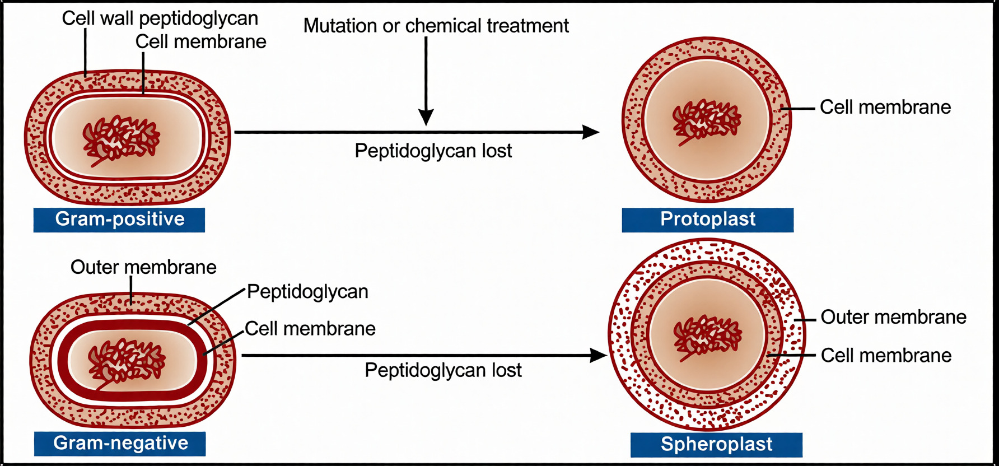
انتظار میرفت گرممثبتها بهدلیل داشتن پپتیدوگلیکان بیشتر، زودتر دیوارهشان را بازسازی کنند و گرممنفیها بهدلیل داشتن پپتیدوگلیکان کمتر، بازسازی ضعیفتری داشته باشند؛ اما نتیجه برعکس بود. گرممثبتها بهسختی یا اصلاً نتوانستند دیواره را بازسازی کنند، درحالیکه گرممنفیها قادر به این کار بودند.
بررسی بیشتر نشان داد که فضای پریپلاسمی و غشای خارجی در گرممنفیها، برخلاف گرممثبتها، مانند سدی در برابر آنتیبیوتیکهای مؤثر بر دیواره و آنزیمهایی مانند لیزوزیم عمل میکنند و موجب میشوند بخشی از پپتیدوگلیکان باقی بماند. همان مقدار باقیمانده، با وجود اینکه گرممنفیها فقط چند لایه پپتیدوگلیکان دارند، میتواند مانند لنگرگاهی باشد که پپتیدوگلیکان جدید به آن متصل شود و دیواره بازسازی شود. در گرممثبتها، پپتیدوگلیکان مستقیماً در معرض دارو قرار میگیرد و ممکن است کاملاً از بین برود؛ بنابراین، پس از حذف آنتیبیوتیک و لیزوزیم، سلول نمیتواند دیواره را بازسازی کند.
| ویژگی مرتبط با بازسازی دیواره | گرممثبت | گرممنفی |
|---|---|---|
| مقدار پپتیدوگلیکان | بیشتر | کمتر؛ چند لایه |
| مواجهه با آنتیبیوتیک مؤثر بر دیواره و لیزوزیم | پپتیدوگلیکان مستقیماً در معرض آنهاست و ممکن است کاملاً از بین برود | فضای پریپلاسمی و غشای خارجی مانند سد عمل میکنند و بخشی از پپتیدوگلیکان باقی میماند |
| نتیجه آزمایش بازسازی | بهسختی یا اصلاً بازسازی نکردند | توانایی بازسازی داشتند |
این آزمایشها را خانم نوبل در مؤسسه جوزف لیستر در لندن انجام دادند.
این موضوع از نظر بالینی به کاملنکردن دوره آنتیبیوتیک مربوط است. برای مثال، ممکن است فردی قرار باشد یک هفته آنتیبیوتیک مصرف کند، اما پس از سه روز و با کاهش علائم (مانند قطع شدن گلودرد)، دارو را قطع کند. طی مصرف آنتیبیوتیک، مقدار دارو در خون باید در حدی باشد که باکتریها بهتدریج از بین بروند. بخشی از باکتریها میمیرند و علائم کاهش مییابد، اما کاهش علائم به معنی حذف کامل باکتریها نیست؛ برخی باکتریها آسیب میبینند، ولی کاملاً از بین نمیروند.
با قطع آنتیبیوتیک، شرایط برای بازسازی دیواره و برگشت باکتری فراهم میشود و عفونت ممکن است عود کند. تولید آزمایشگاهی پروتوپلاستها و اسفروپلاستها نشان میدهد که اگر دوره کامل درمان آنتیبیوتیکی مصرف نشود، ممکن است باکتریها توانایی بازسازی و بازگشت عفونت داشته باشند.
بعضی باکتریها، مانند مایکوپلاسماها، اساساً دیواره ندارند و جزو فرمهای حاصل از پروتوپلاست یا اسفروپلاست محسوب نمیشوند. اگر پرسیده شود مایکوپلاسما گرممثبت است یا گرممنفی، پاسخ هیچکدام است؛ دیوارهای ندارد که رنگ گرم را حفظ کند. مایکوپلاسما غشای سیتوپلاسمی و سیتوپلاسم دارد.
در رنگآمیزی گرم ابتدا کریستال ویوله و ید اضافه میشود و سپس با الکل شستوشو میدهند: در گرممثبتها رنگ باقی میماند و در گرممنفیها خارج میشود. پس از آن سافرانین اضافه میشود. باکتری بدون دیواره نیز با کریستال ویوله رنگ میگیرد، اما هنگام شستوشو رنگ را از دست میدهد و در پایان سافرانین را میگیرد؛ بنابراین، رنگ نهایی آن شبیه گرممنفی است. رنگپذیری این باکتریها کمتر است، اما گرممثبت دیده نمیشوند. این نکته در یک سؤال امتحانی نیز مطرح شده بود.
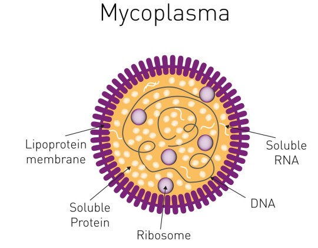
بعضی از ساختارهای قرارگرفته روی دیواره باکتریها به آنها قابلیت حرکت میدهند. این ساختارها فرعیاند و ممکن است بعضی باکتریها آنها را داشته باشند و بعضی نداشته باشند. این گفته به این معنا نیست که درون یک گونه، باکتریها بهطور معمول گروهی متحرک و گروهی غیرمتحرک باشند؛ مثلاً اشریشیا کلی و سالمونلاها متحرکاند، اما شیگلاها غیرمتحرکاند. استثناهای محدودی نیز وجود دارد؛ برای مثال، ممکن است باکتری در دمای محیط متحرک و در دمای بدن غیرمتحرک باشد یا برعکس. در کل، باکتریها عمدتاً یا متحرکاند یا غیرمتحرک.
متحرکبودن و داشتن کپسول برای تشخیص باکتری اهمیت دارد. برای بررسی motility، باکتری را در محیط کشت خاصی به نام SIM کشت میدهند و میگذارند یک روز رشد کند:
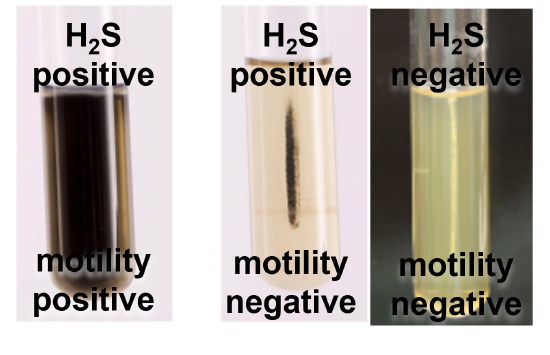
| نتیجه در محیط SIM | الگوی رشد |
|---|---|
| باکتری متحرک | رشد در محیط پخش میشود |
| باکتری غیرمتحرک | رشد فقط در امتداد خط کشت باقی میماند |
این آزمایش برای افتراق باکتریها مفید است. برای مثال، یکی از نکات اصلی افتراق سالمونلا از شیگلا این است که سالمونلا بهشدت متحرک است، اما شیگلا متحرک نیست؛ الگوی رشد در SIM به تشخیص کمک میکند.
کپسول یکی از ساختارهایی است که روی سطح باکتری بررسی میشود. بعضی باکتریها کپسول دارند و بعضی اساساً فاقد آناند. بعضی باکتریهای گرممثبت و گرممنفی بهوسیله لایههایی از جنس پلیساکارید یا پروتئین، یعنی کپسول، احاطه میشوند. کپسول از طریق پیوندهای غیرکوالانسی به لایههای زیرین خود متصل است و جنس آن حتی ممکن است در سویههای مختلف یک گونه یا مراحل مختلف رشد تفاوت، داشته باشد.
اسلاید کپسول و لایههای لعابی را نیز با عنوان کلی گلیکوکالیکس آورده است. این تمایزها بیشتر به ظاهر و ساختار مربوطاند و از نظر عملکردی اهمیت زیادی ندارند.
| ساختار سطحی | توصیف ظاهری در درس |
|---|---|
| کپسول | ضخامت یکنواخت و بافت منسجم |
| لایه لعابی (Slime layer) | چسبنده و بیشکل، با تراکم و ضخامت غیر یکنواخت |
| گلیکوکالیکس (Glycocalyx) | پوشش پخش و شل؛ عنوان کلیای که اسلاید برای کپسول و لایههای لعابی نیز بهکار برده است |
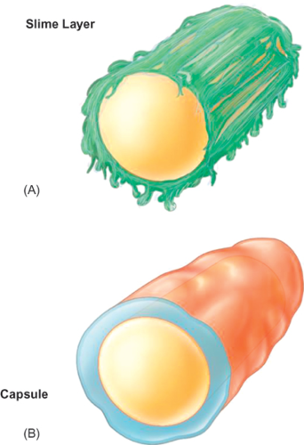
کپسول اغلب باکتریها پلیساکاریدی است، اما بعضی کپسولها جنس دیگری دارند:
| ترکیب یا وضعیت کپسول | مورد ذکرشده |
|---|---|
| پلیساکاریدی | ترکیب رایج کپسول باکتریها |
| لیپیدی | Francisella tularensis |
| پروتئینی | Bacillus anthracis |
| گلیکوپروتئینی | Yersinia pestis |
بهطور کلی، داشتن یا نداشتن کپسول میتواند در تشخیص باکتری کمککننده باشد.
اگر کپسول فقط از یک ترکیب ساخته شده باشد، هموپلیمر نامیده میشود. نمونههای ذکرشده در اسلاید، کپسول دکستران و لوان در Streptococcus mutans هستند.
اگر کپسول از تکرار دو یا چند ترکیب متفاوت ساخته شده باشد، هتروپلیمر است. نمونهها در اسلاید عبارتاند از:
| نوع کپسول | تعریف | نمونههای ذکرشده |
|---|---|---|
| هموپلیمر | ساختهشده از یک ترکیب | دکستران و لوان در Streptococcus mutans |
| هتروپلیمر | ساختهشده از تکرار دو یا چند ترکیب متفاوت | آلژینات در Pseudomonas aeruginosa؛ هیالورونیکاسید در Streptococcus گروه A |
از کپسول Pseudomonas aeruginosa، آلژینات نیز بهدست میآید. آلژینات در محصولات لبنی و آبمیوهها بهعنوان هموژنایزر کاربرد دارد. برای نمونه، شیر کارخانهای پس از جوشاندن معمولاً دوفاز نمیشود، درحالیکه شیر دیگری ممکن است دوفاز شود.
مهمترین نقش کپسول، خاصیت ضدفاگوسیتوزی آن است. کپسول به باکتری کمک میکند در بدن میزبان از دفاع ایمنی فرار کند و مانع فاگوسیتوز آن بهوسیله ماکروفاژها و سلولهای فاگوسیتکننده دیگر شود. سازوکارهای مطرحشده عبارتاند از:
| سازوکار مطرحشده | چگونگی کمک به فرار از فاگوسیتوز |
|---|---|
| بار منفی بسیاری از کپسولها | دفع بار منفی سطح سلولهای فاگوسیتکننده |
| بزرگترکردن باکتری | دشوارترشدن فاگوسیتوز |
| شباهت آنتیژنتیک به ساختارهای میزبان | کمک به فرار از شناسایی ایمنی |
| پردازشنشدن کپسول بهوسیله بعضی آنزیمهای میزبان | کاهش توان میزبان برای پردازش کپسول |
| پوشاندن آنتیژنهای سطحی | دشوارترشدن شناسایی و اتصال آنتیبادیها |
کپسول برای رشد باکتری ضروری نیست، اما برای بقای آن در میزبان اهمیت دارد. در باکتریهای بیماریزا به توانایی تهاجم کمک میکند و تا وقتی باکتری بهوسیله آنتیبادی ضدکپسول پوشیده نشده باشد، مانع فاگوسیتوز میشود.
کپسول خاصیت آنتیژنی دارد و آنتیژن کپسولی را آنتیژن K مینامند، نه C. برای مثال، در نامگذاری E. coli K88، حرف K و عدد به کپسول اشاره دارند. در طبقهبندی از آنتیژنهای O، H و K استفاده میشود:
اگر کپسول روی فلاژل را بپوشاند، ممکن است آنتیژن فلاژل دیده نشود.
| آنتیژن | ساختار مرتبط در درس |
|---|---|
| O | آنتیژنهای سطحی |
| H | فلاژل |
| K | کپسول |
کپسول همچنین میتواند:
کلونی باکتریهای کپسولدار اغلب حالت موکوئیدی دارد.
| نقش دیگر کپسول | توضیح ذکرشده |
|---|---|
| سد در برابر مولکولهای هیدروفوبیک سمی | از جمله مواد پاککننده و بعضی آنتیبیوتیکها |
| افزایش چسبندگی | به باکتریهای دیگر یا سطوح بافتی میزبان |
| خاصیت ضدکمپلمانی | در بعضی باکتریها اسید سیالیک از رسوب C3b روی سطح جلوگیری میکند |
| گیرنده باکتریوفاژ | کپسول بعضا به ضرر باکتری عمل میکند و باکتریوفاژها را جذب میکند |
| جلوگیری از دهیدراتاسیون | کپسول آب فراوان دارد |
| ظاهر کلونی | کلونیهای کپسولدار اغلب موکوئیدیاند |
هنگامی که باکتری روی محیط جامد آگار کشت داده میشود، کلونی تشکیل میدهد. هنگام برداشتن کلونی با لوپ برای سابکالچر، کلونی کپسولدار ممکن است حالت کشسان داشته باشد؛ شبیه کشآمدن پنیر پیتزا. Klebsiella pneumoniae نمونه شناختهشدهای است و Klebsiella oxytoca و گونههای دیگر کلبسیلا نیز ممکن است کپسول فراوان داشته باشند. ظاهر موکوئیدی و کشسانی کلونی میتواند به تشخیص کمک کند.
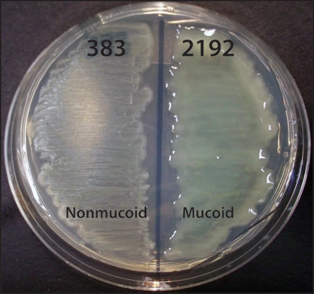
| موفولوژی کلونی | نکته قابل برداشت |
|---|---|
| کلونی M (موکوئیدی) | باکتری دارای کپسول است |
| کلونی S (صاف) | باکتری دارای AgO است |
| کلونی R (خشن) | باکتری فاقد AgO است |
کپسول برای فرار از دفاع ایمنی، بهویژه در بدن، استفاده میشود. برخی باکتریها در بدن کپسول تولید میکنند، ولی خارج از بدن آن را ندارند؛ ازاینرو، ظاهر باکتری در نمونه بالینی ممکن است با ظاهر آن در محیط کشت تفاوت کند. کپسول میتواند اتصال باکتری به باکتریهای دیگر یا سطوح بافتی را نیز افزایش دهد.
برای بررسی کپسول از تست کوئلانگ (Quellung)، یا تست نیوفلد، استفاده میشود. باکتری موردنظر را با آنتیبادی ضدکپسول انکوبه میکنند و سپس با مرکب هندی رنگآمیزی میکنند. اگر باکتری کپسول داشته باشد، آنتیبادی اختصاصی به کپسول متصل میشود و موجب تورم یا بزرگشدن قابلمشاهده کپسول میشود. اندازه باکتری را میتوان با نمونه قبل از افزودن آنتیسرم مقایسه کرد. این تست هم برای بررسی وجود یا عدم وجود کپسول و هم برای تعیین تیپ باکتریهای کپسولدار کاربرد دارد.
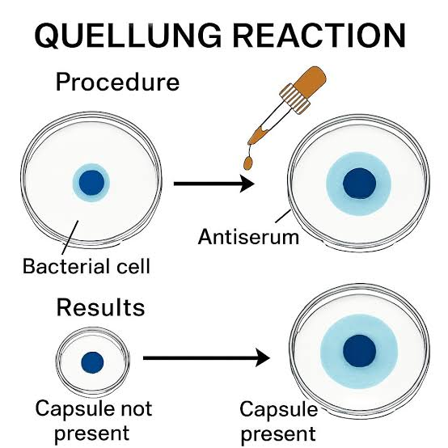
| مرحله یا نتیجه در تست Quellung | توضیح |
|---|---|
| انکوباسیون | باکتری را با آنتیبادی ضدکپسول انکوبه میکنند |
| رنگآمیزی | سپس از مرکب هندی استفاده میکنند |
| نتیجه در صورت وجود کپسول | اتصال آنتیبادی اختصاصی باعث تورم یا بزرگشدن قابلمشاهده کپسول میشود |
| کاربرد | بررسی وجود یا عدم وجود کپسول و تعیین تیپ باکتریهای کپسولدار |
از تست کوئلانگ برای ردیابی و تعیین تیپ Streptococcus pneumoniae، Klebsiella pneumoniae و Haemophilus influenzae استفاده میشود. کاربرد بالینی آن در بررسی بیماریهایی مانند مننژیت مطرح است. اگر در CSF (مایعمغزینخاعی) باکتری دیده شود، مشاهده دیپلوکوک میتواند شک به Neisseria meningitidis را مطرح کند؛ مشاهده باسیل یا کوکوباسیل گرممنفی نیز میتواند شک به Haemophilus influenzae را مطرح کند. این باکتریها ممکن است مننژیت شدید ایجاد کنند؛ بنابراین، شناسایی و تعیین تیپ اهمیت دارد.
Haemophilus influenzae تیپهای A، B، C و D دارد. تیپ B خطرناک است، میتواند بیماری را سریع پیش ببرد و حتی به مرگ بیمار منجر شود؛ سه تیپ دیگر به همان اندازه خطرناک نیستند. واکسن این باکتری علیه سویه تیپ B است. اگر باکتری جداشده از بیمار H. influenzae باشد، دانستن تیپ آن برای انتخاب درمان و پیشآگهی اهمیت دارد. در فرد واکسینهشدهای که به تیپ B مبتلا شده است، این پرسش مطرح میشود که آیا واکسن مؤثر نبوده، آنتیبادی کافی وجود نداشته یا امکان انتقال به دیگران هست.
| موضوع | اطلاعات ذکرشده |
|---|---|
| تیپها | A ،B ،C و D |
| تیپ مورد تأکید | B؛ خطرناکتر، با امکان پیشرفت سریع بیماری و مرگ |
| واکسن | علیه سویه تیپ B |
| اهمیت تعیین تیپ | کمک به انتخاب درمان و پیشآگهی |
| روشهای متداول کشت و بیوشیمی | قادر به افتراق تیپهای مختلف نیستند؛ برای مثال همه روی chocolate agar رشد میکنند و ویژگیهای مشابهی دارند |
روشهای متداول کشت و بیوشیمی نمیتوانند تیپهای مختلف H. influenzae را از هم افتراق دهند؛ برای مثال، همه روی chocolate agar رشد میکنند و ویژگیهای مشابهی دارند. برای تعیین تیپ میتوان از کیت سرولوژیک حاوی آنتیبادیهای اختصاصی تیپهای A ،B ،C و D استفاده کرد:
| مرحله تعیین تیپ با کیت سرولوژیک | کار انجامشده |
|---|---|
| ۱ | باکتری رشدکرده را روی چهار اسلاید قرار میدهند |
| ۲ | به هر اسلاید آنتیبادی یکی از تیپهای A ،B ،C یا D را میافزایند |
| ۳ | مطابق روش کیت، آگلوتیناسیون یا تورم را بررسی میکنند |
| ۴ | اسلاید کنترل باکتری را بدون افزودن معرف نشان میدهد |
لایه S ساختاری جدا از کپسول و گلیکوکالیکس است و از پروتئین یا گلیکوپروتئین تشکیل میشود. در اسلاید حضور آن در بعضی باکتریهای گرممنفی و گرممثبت ذکر شده، درحالیکه در گفتار بیشتر بر حضور آن در بعضی باکتریها، بهویژه گرممثبتها، تأکید شد.
ساختار لایه S در باکتریهای گرممثبت از نظر ساختار مانند لیپوپلیساکارید در باکتریهای گرممنفی است.
عملکردهای لایه S تاکنون به خوبی شناخته نشدهاند اما در اسلاید موارد ذکرشده عبارتاند از:
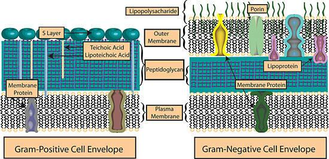
شماتیک پوشش سلولی باکتریهای گرممثبت و گرممنفیفلاژل (Flagellum؛ جمع: Flagella) ساختاری است که در بعضی باکتریها وجود دارد و به حرکت آنها کمک میکند. فلاژل رشتهای طنابمانند است که از زیرواحدهای پروتئینی حلقوی و مارپیچی به نام فلاژلین (Flagellin) ساخته شده و از سه قسمت اصلی تشکیل میشود:
| بخش فلاژل | نام انگلیسی |
|---|---|
| فیلامنت | Filament |
| قلاب | Hook |
| جسم پایهای | Basal body |
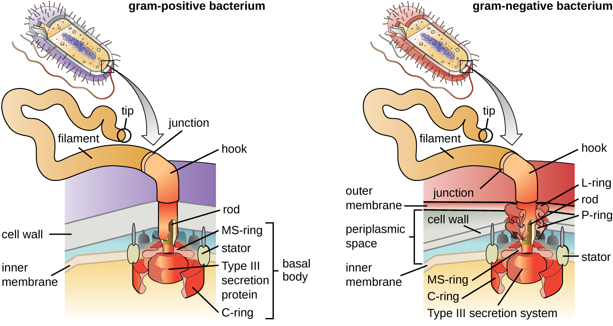
جسم پایهای از مجموعه صفحات حلقوی، میله و اجزای پایه تشکیل میشود. حلقهها درون غشای سیتوپلاسمی و در امتداد پوشش سلولی قرار دارند. تعداد حلقهها در گرممنفیها بیشتر از گرممثبتهاست: گرممنفیها چهار حلقه و گرممثبتها دو حلقه دارند. گرممثبتها فقط حلقههای M و S را دارند و فاقد حلقههای P و L هستند.
حلقههای بیرونی P و L در تسهیل حرکت چرخشی و پایداری فلاژل نقش دارند. باکتریهای متحرک در بخش انتهایی سیتوپلاسمی فلاژل خود حلقه C نیز دارند؛ پروتئینهای سوئیچ FliM، FliN و FliG در تعیین جهت چرخش نقش دارند.
| ویژگی | گرممنفی | گرممثبت |
|---|---|---|
| تعداد حلقهها در اسلاید | چهار | دو |
| حلقههای ذکرشده | M، S، P و L | M و S |
| حلقههای P و L | وجود دارند؛ با پپتیدوگلیکان و لیپوپلیساکارید مرتبط شدهاند | وجود ندارند |
| حلقه | بخش مرتبط در اسلاید |
|---|---|
| M | بخش درونی غشای سیتوپلاسمی |
| S | بخش بیرونی غشا |
| P | پپتیدوگلیکان در فضای پریپلاسمی |
| L | لیپوپلیساکارید |
| C | بخش انتهایی سیتوپلاسمی فلاژل باکتریهای متحرک؛ همراه با FliM، FliN و FliG در تعیین جهت چرخش |
موتور فلاژل با نیروی محرکه پروتون کار میکند. پروتون در محیط خارج سلول بیشتر و درون سیتوپلاسم کمتر است؛ حرکت پروتون از بیرون به داخل، از راه پروتئینهای MotA و MotB، در چرخش فلاژل نقش دارد. میتوان آن را با پیستونهای موتور مقایسه کرد: حرکت اجزای موتور به حرکت چرخشی تبدیل میشود. در فلاژل نیز حرکت پروتئینها بر اثر عبور پروتون و بهواسطه برجستگیها و فرورفتگیها به حرکت دورانی تبدیل میشود و محور فلاژل را میچرخاند. چرخش محور موجب حرکت فیلامنت و در نتیجه حرکت باکتری میشود.
| پیوند در توضیح شفاهی حرکت فلاژل | شرح |
|---|---|
| اختلاف مقدار پروتون | پروتون در محیط خارج سلول بیشتر و درون سیتوپلاسم کمتر است |
| عبور پروتون | از بیرون به داخل، از راه MotA و MotB |
| تبدیل حرکت | حرکت پروتئینها از عمودی به حرکت دورانی تبدیل میشود |
| نتیجه | محور میچرخد، فیلامنت حرکت میکند و باکتری جابهجا میشود |
قلاب، فیلامنت را به جسم پایه متصل میکند. پروتئینهای FlgD و FlgK در اتصال قلاب به فیلامنت نقش دارند. فیلامنت از فلاژلین (FLiC) ساخته شده است. هر باکتری از یک نوع فلاژلین برای ساخت فلاژل خود استفاده میکند.
فلاژلین در سیتوپلاسم ساخته میشود، از درون ساختار عبور میکند و به انتهای فیلامنت اضافه میشود؛ بنابراین، فیلامنت میتواند بلند شود. اگر فلاژل قطع یا شکسته شود، فلاژلینهای جدید میتوانند به انتهای آن اضافه شوند و آن را بازسازی کنند. در انتهای فیلامنت، کلاهکی از جنس پروتئین FLiD قرار میگیرد.
| جزء یا پروتئین | نقش یا ویژگی ذکرشده |
|---|---|
| قلاب (Hook) | اتصال فیلامنت به جسم پایه |
| FlgD و FlgK | نقش در اتصال قلاب به فیلامنت |
| فلاژلین؛ FliC در اسلاید | پروتئین سازنده فیلامنت |
| فلاژلین تازهساختهشده | از درون ساختار عبور میکند و به انتهای فیلامنت اضافه میشود؛ میتواند فلاژل قطعشده را بازسازی کند |
در باکتریهای مارپیچی یا اسپیروکتها، ساختار حرکتی در فضای پریپلاسمی قرار دارد و به آن فیلامنت محوری (axial filament) یا اندوفلاژل (endoflagellum) میگویند. این ساختار از ساقه (Snaff)، غلاف پوشاننده (sheath/covering) و دستگاه الحاقی تشکیل شده است.
اسپیروکتها بهوسیله حرکت مارپیچی یا corkscrew حرکت میکنند؛ مانند حرکت چوبپنبهکش که با چرخش وارد چوبپنبه میشود و آن را بیرون میآورد.
اندوفلاژل در اسپیروکتها میتوانند متعدد باشند؛ مثلا برای Leptospira تا ۱۱ اندوفلاژل دیده میشود.
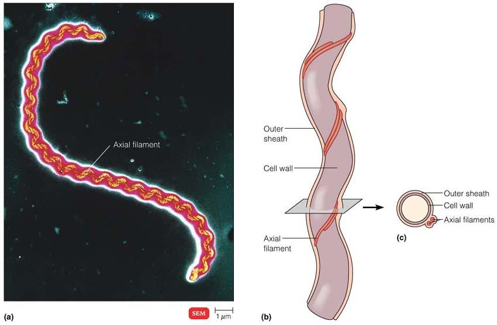
نمونه اندوفلاژل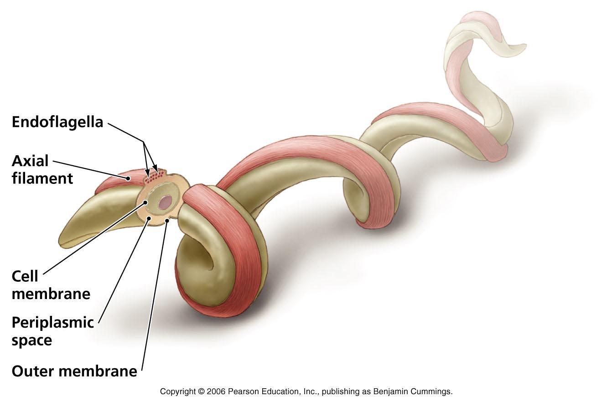
نمونه اندوفلاژلفلاژل با حرکت باکتری ارتباط دارد. تغییر محیط که موجب تغییر رفتار سلول میشود، انتقال حسی (Sensory transduction) نامیده میشود. حرکت باکتری با تنظیم حرکت و تغییر جهت آن تعیین میشود.
فلاژل خاصیت آنتیژنی دارد و آنتیژن آن را H مینامند؛ این آنتیژن در تعیین سویه کاربرد دارد. برای نمونه، در نامگذاری یک سویه E. coli، آنتیژنهای O، H و K بهترتیب به آنتیژنهای سطحی، فلاژل و کپسول مربوط میشوند.
آرایش فلاژلها در باکتریهای باسیل انواع مختلفی دارد:
| آرایش | توصیف |
|---|---|
| monotrichous | یک فلاژل در یک قطب |
| amphitrichous | فلاژل در دو قطب |
| lophotrichous | چند فلاژل در یک قطب |
| peritrichous | فلاژل در سراسر سطح باکتری |
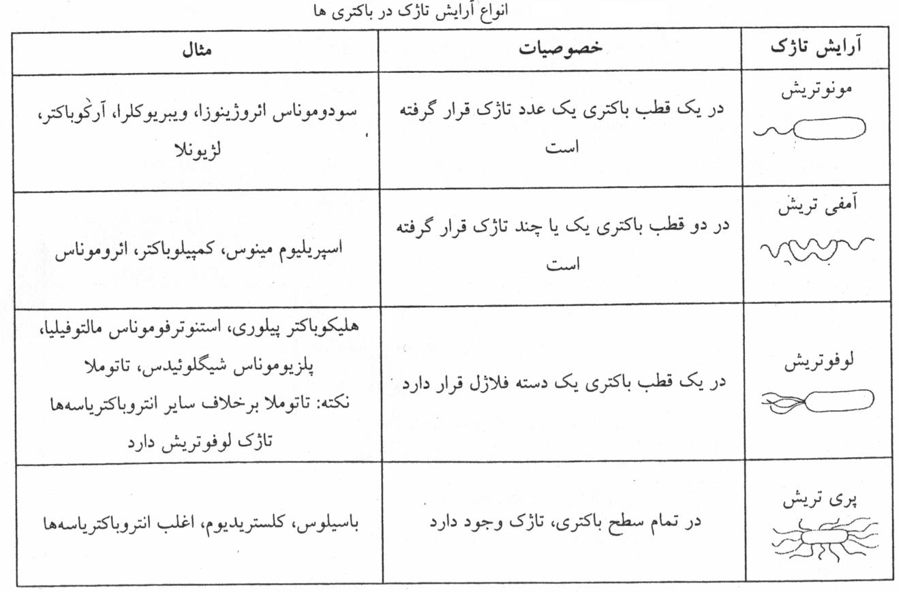
انواع آرایش تاژک در باسیلهادرباره اهمیت حرکت در بیماریزایی باید میان محیطها تفاوت گذاشت. در محیطهای مایع، عامل حرکتی میتواند باکتری را به محل موردنظر برساند؛ برای مثال، در محیطهای آبی ممکن است باکتری بهسمت سطح و نور حرکت کند. اما در بدن، مایعاتی مانند خون، CSF و ادرار خودشان جریان دارند و بسیاری از بافتها نیز بافت جامدند که اندام حرکتی در آن بیکاربرد است؛ بنابراین، حرکت فلاژلی معمولا در رساندن باکتری به بافت کمک زیادی نمیکند.
فلاژل ساختاری بزرگ است و سیستم ایمنی میتواند آن را شناسایی کند. در مقابل، پیلی با اتصال به سطح بافتی میتواند به کلونیزاسیون کمک کند. بااینحال، باکتریهایی با motility زیاد ممکن است در بعضی شرایط به بافتهای مهمتر برسند؛ برای مثال، Proteus vulgaris یا Proteus mirabilis که در روده حضور دارند، میتوانند برخلاف جریان ادرار در مجاری ادراری حرکت کنند، به کلیه برسند و به بافت پارانشیم کلیه آسیب بزنند.
نوع آرایش فلاژل در نوع حرکت نیز اثر دارد:
| آرایش فلاژل | نوع حرکت یا پیامد ذکرشده |
|---|---|
| یک فلاژل در یک قطب | چرخش فلاژل میتواند باکتری را به جلو براند |
| فلاژل در دو قطب | حرکت ممکن است به شکل tumbling یا چرخش و غلطیدن باشد |
| lophotrichous با چند فلاژن در یک قطب | حرکت رو به جلو مانند موشک |
| peritrichous با فلاژلهای متعدد در سطح | حرکت خزشی؛ پخششدن در محیط نیمهجامد یا روی آگار و پوشاندن سطح پلیت |
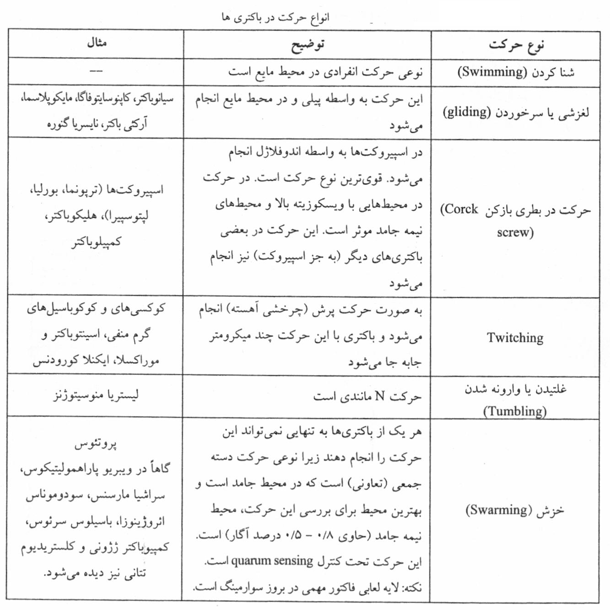
انواع حرکت در باکتریهاپیلی (pili؛ در فارسی گاهی «مژک» یا «شرابه») ساختاری موییشکل، سخت و در عین حال قابلانعطاف است که روی سطح باکتری قرار میگیرد. واژه pili در لاتین به معنی ریشه است. تعداد زیادی از باکتریهای گرممنفی و تعداد کمی از گرممثبتها، از جمله Corynebacterium و Streptococcus، پیلی دارند.
پیلی از زیرواحدهای پروتئینی به نام پیلین ساخته میشود که توانایی تجمع خودبهخودی دارند. معمولاً تعداد زیادی (حدود ۱۵۰ تا ۲۰۰ عدد) fimbriae بهشکل یکنواخت (پریتریش) در سطح سلول قرار میگیرند. طول آنها حدود ۱۵ تا ۲۰ میکرومتر و ممکن است چندین برابر طول سلول باشند. پیلی از غشای سیتوپلاسمی منشأ میگیرد. پیلیهای معمولی بهتنهایی خاصیت ایمونولوژیک ندارند و hapten توصیف شدهاند. باکتریهای دارای پیلی توانایی بقای بیشتری در محیط، از جمله در مثانه، دارند.
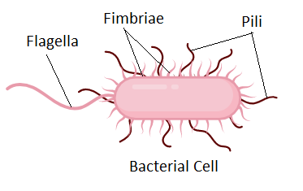
پیلی به باکتری کمک میکند به سطوح، بافتها و اندامهایی مانند دیواره عروق یا دیواره روده متصل شود. چون اتصال و بهدنبال آن کلونیزاسیون میتواند بیماریزایی را تشدید کند، پیلی را یک فاکتور بیماریزایی (virulence factor) در نظر میگیریم.
Virulence با فاکتورهای مختلفی ارتباط دارد: باکتری ممکن است fimbriae داشته باشد و بهتر متصل و کلونیزه شود، toxin تولید کند و سلول هدف را تخریب کند، یا siderophore داشته باشد و برای جذب آهن با سلولهای اطراف رقابت کند. هرچه باکتری فاکتورهای virulence بیشتری داشته باشد، بیماریزاتر است.
پیلیها را میتوان بر اساس گیرندهای که به آن متصل میشوند دستهبندی کرد:
| ویژگی | پیلی | فلاژل |
|---|---|---|
| اندازه ذکرشده در اسلاید | ۳ تا ۸ نانومتر | ۲۰ نانومتر |
| ساختار مارپیچی | معمولاً ندارد | فلاژل رشتهای از زیرواحدهای حلقوی و مارپیچی فلاژلین است |
| محل اضافهشدن زیرواحدهای جدید | پایه پیلی | نوک فیلامنت |
| جسم پایهای | جسم پایهای کامل ندارد | دارای جسم پایهای |
| چرخش | نمیتواند بچرخد | حرکت چرخشی در حرکت آن نقش دارد |
بعضی پیلیها در فرار باکتری از سیستم ایمنی نقش دارند. پیلی پروتئینی است و مانند فلاژل میتواند آنتیژن سطحی باشد؛ سیستم ایمنی آن را شناسایی میکند و واکنش التهابی ایجاد میشود. تب ناشی از واکنش سیستم ایمنی به آنتیژنهای سطحی باکتری است، نه خود ساختار باکتری.
بعضی باکتریها میتوانند انواع مختلف پیلی یا adhesin را بیان کنند. هنگامی که سیستم ایمنی یک نوع پیلی را شناسایی و باکتری را سرکوب میکند، باکتریهای باقیمانده ممکن است نوع دیگری از پیلی یا adhesin را بیان کنند؛ در نتیجه، سیستم ایمنی آنها را بهعنوان عامل متفاوتی شناسایی میکند و واکنش ایمنی و تب ممکن است بازگردد. در تبهای راجعه، باکتری میتواند آنتیژنهای سطحی خود را تغییر دهد و در طول بیماری چندین حمله تب ایجاد کند؛ در بعضی موارد تا ۱۵ حمله رفتوبرگشتی تب ممکن است رخ دهد.
| موضوع | شرح ذکرشده |
|---|---|
| پیلی بهعنوان آنتیژن | پروتئینی است و میتواند مانند فلاژل آنتیژن سطحی باشد |
| واکنش ایمنی | شناسایی آنتیژن سطحی باکتری با واکنش التهابی همراه میشود؛ تب ناشی از واکنش سیستم ایمنی است |
| تغییر نوع پیلی یا adhesin | باکتریهای باقیمانده ممکن است پس از شناسایی یک نوع، نوع دیگری را بیان کنند |
| تب راجعه | تغییر آنتیژنهای سطحی میتواند با چندین حمله تب همراه باشد؛ حداقل ۱۵ حمله رفتوبرگشتی ممکن است |
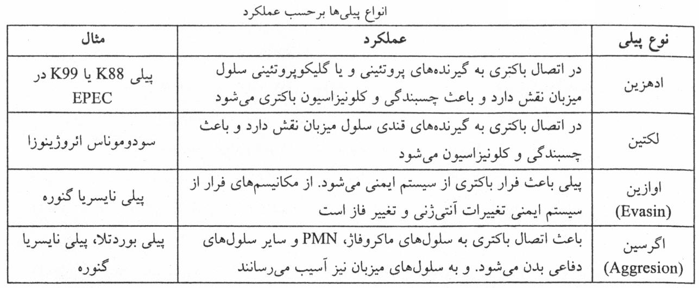
انواع پیلیها براساس عملکردپیلی معمولی (Common pili) یا پیلی سوماتیک در سطح باکتری فراوان است و در اتصال باکتری به سلولهای میزبان نقش دارد. هر سلول ۱۰۰ تا ۳۰۰ پیلی معمولی دارد. یکی از بهترین منابع برای یافتن باکتریهای دارای پیلی، سیستم ادراری است.
نوع دیگری از پیلی، پیلی جنسی، در کونژوگاسیون نقش دارد و باکتری دهنده را به باکتری گیرنده متصل میکند. در هر سلول حدود ۱ تا ۳ پیلی جنسی وجود دارد. باکتریهای دارای پیلی جنسی «باکتری نر» نامیده میشوند.
دو نقش برای پیلی جنسی در اسلاید ذکر شده است:
باکتری دارای پیلی جنسی به باکتری فاقد آن متصل میشود و از راه کانالی که بین دو باکتری تشکیل میشود، ماده ژنتیکی، از جمله پلاسمید، انتقال مییابد. انتقال پلاسمید یکی از راههای انتقال ژنهای مقاومت آنتیبیوتیکی یا ژنهای مقاومت دیگر بین باکتریهاست.
| ویژگی | پیلی معمولی | پیلی جنسی |
|---|---|---|
| تعداد ذکرشده | ۱۰۰ تا ۳۰۰ | حدود ۱ تا ۳ |
| نقش اصلی ذکرشده | اتصال باکتری به سلولهای میزبان | اتصال باکتری دهنده به گیرنده و نقش در conjugation |
| نقشهای دیگر | در درس به فراوانی در سطح باکتری اشاره شده است | گیرنده فاژ؛ انتقال ماده ژنتیکی، از جمله پلاسمید |
| نکته تکمیلی | سیستم ادراری یکی از بهترین منابع برای یافتن باکتریهای دارای پیلی دانسته شده است | انتقال پلاسمید یکی از راههای انتقال ژنهای مقاومت آنتیبیوتیکی یا ژنهای مقاومت دیگر است |
اندوسپور ساختاریست که درون باکتری تشکیل میشود. همه باکتریها اسپور تولید نمیکنند؛ فقط باکتریهایی که ژنهای مربوط به اسپور را دارند، در پاسخ به شرایط نامساعد میتوانند این فرم مقاوم را بسازند. اسپور ساختاری چندلایه و دهیدراته است که از باکتری محافظت میکند و امکان بقای آن را در حالت تعلیق فعالیت (Suspended Animation) فراهم میآورد.
اسپور از نظر متابولیکی غیرفعال است و در چرخه آن، از هر باکتری یک اسپور و از هر اسپور یک باکتری رویشی بهوجود میآید. اسپورسازی وسیله تکثیر باکتری نیست، بلکه وسیله بقای آن است.
در رنگآمیزی گرم، اسپور رنگ نمیگیرد و بهصورت جسمی شفاف دیده میشود. البته رنگ آمیزی خاص آن وجود دارد اما عمدتا استفاده نمیشود. محل قرارگیری اسپور درون سلول یکی از ویژگیهایی است که میتواند در شناسایی باکتری کمک کند. در اسلاید، اسپور دارای این اجزا و ویژگیها توصیف شده است:
دیپیکولینات کلسیم ویژگی اسپور است و در باکتریهای رویشی وجود ندارد.
| ویژگی یا جزء اسپور | شرح ذکرشده |
|---|---|
| کروموزوم | یک کپی کامل |
| پروتئینهای ضروری و ریبوزوم | غلظت کم |
| کلسیم | مقدار زیاد متصل به دیپیکولینیک اسید |
| mRNA و RNA | mRNA ندارد و مقدار RNA اندک است |
| SASP | پروتئینهای ذخیرهشده بهصورت پروتئینهای محلول در اسید |
| آب | حدود ۱۵٪ میزان آب سلول رویشی |
| دیپیکولینات کلسیم | ویژگی اسپور؛ در باکتریهای رویشی وجود ندارد |
در باکتریهای بیماریزا، باکتری گرممنفی اسپورساز نداریم؛ اسپورسازی در بعضی باسیلهای گرممثبت دیده میشود. اسپورهای بعضی باکتریها در برابر حرارت و شرایط نامساعد مقاوماند. در گفتار به اسپورهایی اشاره شد که حتی پنج ساعت جوشیدن را تحمل میکنند و اسپور ممکن است سالها، دههها یا حتی قرنها باقی بماند.
حتی اسپورهای جداشده از استخوان ماموتهای یخزده در سیبری کشت داده شدند و رشد کردند؛ در نتیجه ممکن است اسپورها میلیونها سال نیز کارکرد خود را حفظ کنند.
اسپور Bacillus stearothermophilus مقاومترین اسپور نسبت به حرارت و خشکی معرفی شده و برای بررسی عملکرد اتوکلاو کاربرد دارد.
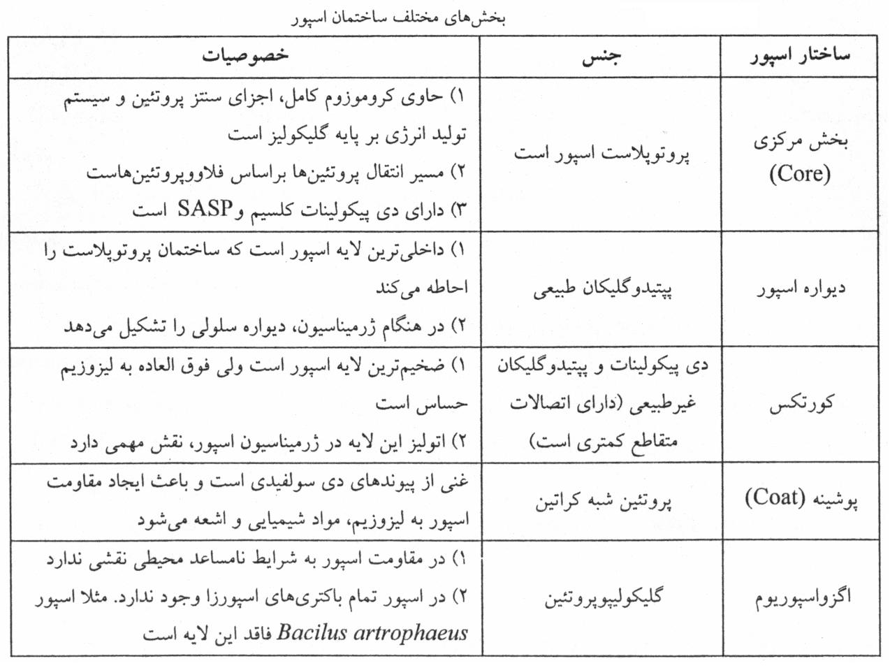
تصویر 28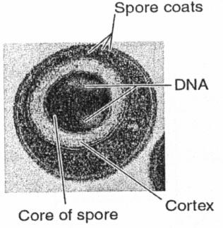
تصویر 29اسپور باکتری با اسپور قارچ تفاوت دارد. در قارچ، اسپور وسیله تکثیر است؛ یک قارچ میتواند تعداد زیادی اسپور بسازد و هر اسپور رشد کند و قارچ جدیدی ایجاد کند. اما باکتری یک اندوسپور تولید میکند، خود باکتری از بین میرود و اسپور وسیله بقای باکتری است، نه تکثیر آن.
اسپور در محیط باقی میماند تا شرایط مناسب شود. ابتدا اسپور درون باکتری است و اندوسپور نامیده میشود؛ سپس با لیزشدن باکتری آزاد میشود.
محل اسپور درون باکتری میتواند مرکزی (central)، انتهایی (terminal)، زیرانتهایی (subterminal) یا جانبی (lateral) باشد. در اسلاید نمونههای زیر ذکر شدهاند:
| محل اسپور | نمونههای ذکرشده |
|---|---|
| مرکزی (central) | Bacillus cereus و Bacillus anthracis |
| جانبی (lateral) | - |
| زیرانتهایی (subterminal) | Bacillus subtilis |
| انتهایی (terminal) | Clostridium tetani |
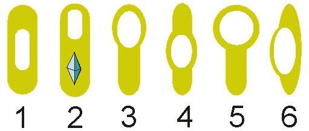
شماره ۱ و ۴ مرکزی، شمارههای ۲، ۳ و ۵ انتهایی و ۶ اسپور جانبی هستنداسپورولاسیون (sporulation)، یعنی تشکیل اسپور، در باکتریهایی آغاز میشود که ژنهای مربوط به تولید اسپور را دارند و در شرایط نامساعد قرار میگیرند. مهمترین عامل کمبود مواد غذایی است؛ از جمله کمبود نیتروژن یا کربن و بهخصوص کمبود β-آلانین. تراکم بالای باکتری و قرارگرفتن در فاز سکون رشد نیز از عوامل مؤثرند. در گفتار، شوکهای محیطی دیگری مانند حرارت، سرما، radiation و اشعه فرابنفش و کمبود بعضی اسیدهای آمینه ضروری نیز مطرح شدند.
در فرایند اسپورولاسیون پلیمرهای ذخیرهای، از جمله پلیبتاهیدروکسیبوتیرات (PHB)، تجمع مییابند. پس از دوبرابرشدن کروموزوم، یک نسخه از DNA همراه با محتویات سیتوپلاسمی بهوسیله غشای سیتوپلاسمی و سپتوم احاطه میشود. سپس ساختار DNAدار و پوشیدهشده با غشا و پپتیدوگلیکان، لایههای بیشتری دریافت میکند؛ ابتدا کورتکس و سپس پوشینه شکل میگیرد و در پایان اسپور بالغ میشود.
فرایند تولید اسپور حدود ۶ تا ۸ ساعت طول میکشد.
| رویدادهای ذکرشده در اسپورولاسیون | ترتیب یا توضیح |
|---|---|
| شرایط آغازکننده | شرایط نامساعد؛ بهویژه کمبود مواد غذایی، همچنین تراکم بالای باکتری و فاز سکون رشد |
| پلیمرهای ذخیرهای | از جمله PHB تجمع مییابند |
| DNA | پس از دوبرابرشدن کروموزوم، یک نسخه از DNA همراه با محتویات سیتوپلاسمی احاطه میشود |
| تشکیل ساختارهای پوشاننده | غشای سیتوپلاسمی و سپتوم؛ سپس لایههای بیشتر، ابتدا کورتکس و سپس پوشینه |
| مراحل نمایشدادهشده | تشکیل axial filament، احاطهشدن forespore، بلوغ و تشکیل دیواره سلول زایشی |
| مدت فرایند | حدود ۶ تا ۸ ساعت |
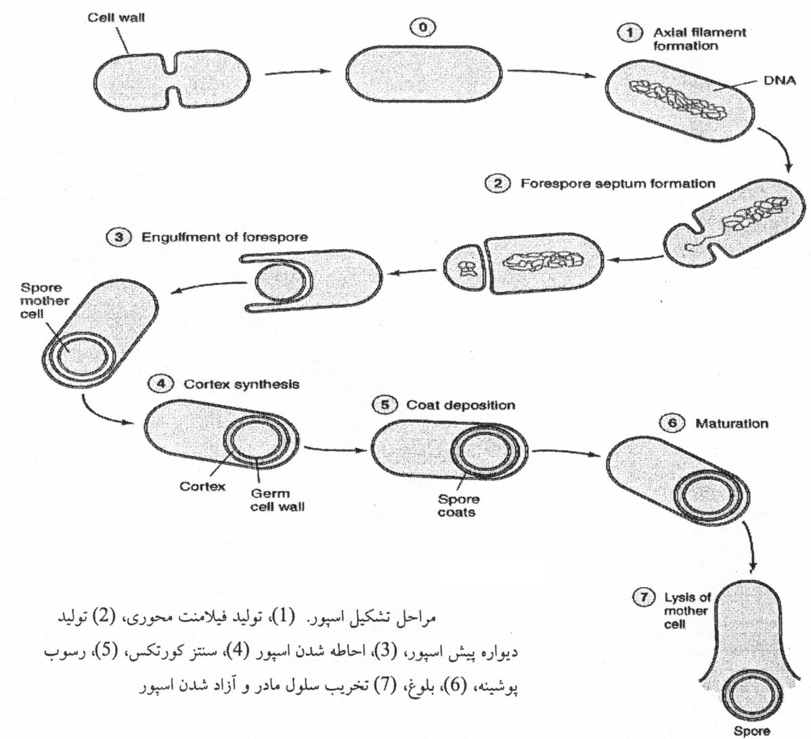
تصویر 32جوانهزنی یا ژرمیناسیون اسپور در سه مرحله انجام میشود و در شرایط آزمایشگاهی حدود یک ساعت زمان میبرد.
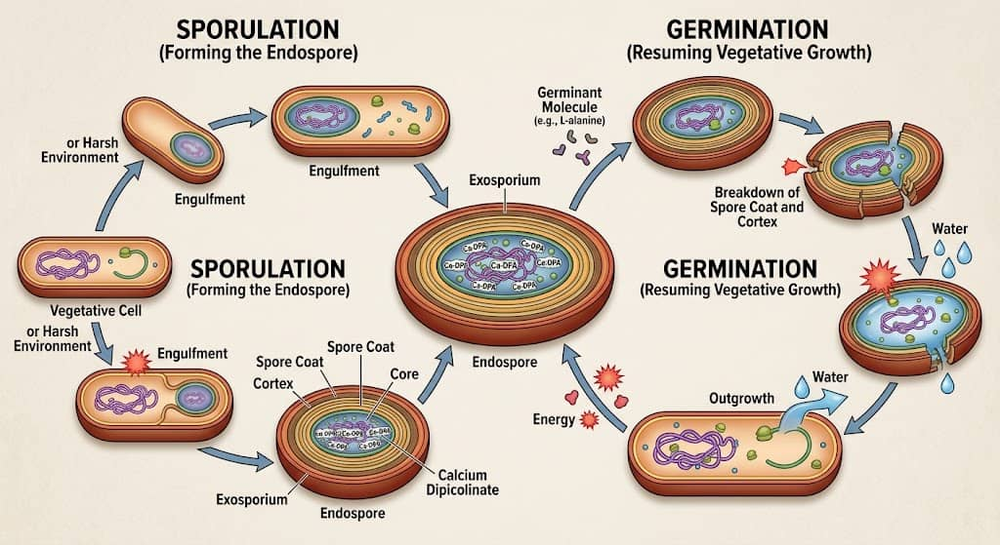
| مرحله ژرمیناسیون | رخدادهای ذکرشده |
|---|---|
| فعالشدن (Activation) | ساییدهشدن دیواره اسپور در اثر تماس با محیط یا اثر مواد شیمیایی حاوی گروه سولفیدریل |
| آغاز (Initiation) | تشخیص نشانههای مناسب محیط بهوسیله گیرندهها؛ در گونههای مختلف آلانین یا آدنوزین میتواند عامل آغاز باشد؛ فعالشدن اتولیزینها و تخریب سریع پپتیدوگلیکان کورتکس؛ ورود آب و رهاشدن دیپیکولینات کلسیم |
| رشد به خارج (Outgrowth) | بیوسنتز فعال که با رشد و تقسیم باکتری ادامه مییابد و به مواد غذایی ضروری نیاز دارد |
اسپور در محیط ممکن است غیرفعال بماند و متابولیسمی نداشته باشد؛ با فراهمشدن شرایط مناسب، روند ژرمیناسیون و تبدیل اسپور به فرم رویشی آغاز میشود. شرایط مناسب میتواند ورود اسپور به بدن انسان یا حیوان از راه غذا، خاک یا تماس دست باشد، یا قرارگرفتن آن در محیطی با مواد غذایی کافی. پس از ورود آب و فعالشدن آنزیمها، لایههایی مانند اگزوسپوریوم، کورتکس و پوشینه تخریب میشوند؛ لایه پپتیدوگلیکانی داخلی گسترش مییابد و باکتری رشد میکند.
اسپورهای Clostridium botulinum و Clostridium tetani در کنسروها یافت میشوند. اسپورهای آنها میتوانند حرارت ناشی از جوشاندن را برای چند ساعت تحمل کنند. این موضوع با توصیه جوشاندن کنسروهای مشکوک به بوتولیسم بهمدت حدود ۲۰ دقیقه تناقضی ندارد؛ هدف از جوشاندن در این مورد ازبینبردن اسپور نیست، بلکه غیرفعالکردن toxin تولیدشده در شرایط بیهوازی است.
اسپور با این حرارت از بین نمیرود و ممکن است پس از ورود به معده و روده، در شرایط مناسب جوانه بزند و رشد کند. اگر فرد فلور طبیعی سالم روده داشته باشد و آنتیبیوتیک مصرف نکرده باشد که این باکتریها را از بین برده باشد، اسپور ممکن است دفع شود و بیماری ایجاد نکند. عسل طبیعی نیز ممکن است اسپورهای باکتریایی داشته باشد، اما فلور طبیعی سالم روده میتواند مانع بیماریزایی شود. بااینحال، اگر toxin وجود داشته باشد، میتواند کشنده باشد؛ بنابراین، حرارتدادن کنسرو برای غیرفعالکردن toxin است، نه ازبینبردن اسپور.
برای کنترل عملکرد اتوکلاو، فشار و دما را بررسی میکنند. که استاندارد آن فشار «۱۵ اتمسفر» و دمای ۱۲۱ درجه است.
یکی از روشهای کنترل اتوکلاو استفاده از نوارهای نشانگر است که در معرض دما و فشار اتوکلاو تغییر رنگ میدهند. نوارها را مانند برچسب روی وسایلی که قرار است استریل شوند میچسبانند. بسته به نوع نوار و دستور شرکت سازنده، ممکن است رنگ کرم به سبز یا قهوهای تیره تغییر کند؛ بااینحال، نوارهای تقلبی یا نامرغوب ممکن است درست عمل نکنند.
برای کنترل کیفی، علاوه بر نوار، از اسپور Bacillus stearothermophilus نیز استفاده میکنند. اسپور این باکتری را مانند چایکیسهای داخل اتوکلاو میگذارند. این باکتری بیماریزا نیست. پس از اتوکلاوکردن، محتویات را مستقیماً روی محیط کشت پخش میکنند و پلیت را ۲۴ ساعت در انکوباتور قرار میدهند:
این کنترل لازم نیست برای هر نوبت اتوکلاو انجام شود و در گفتار، انجام دورهای آن، حدود هر ۱۰ تا ۱۵ نوبت، مطرح شد.
| روش کنترل اتوکلاو | روش انجام و تفسیر ذکرشده |
|---|---|
| نوار نشانگر | روی وسایل میچسبانند؛ در معرض دما و فشار تغییر رنگ میدهد؛ تغییر رنگ بسته به نوار میتواند از کرم به سبز یا قهوهای تیره باشد |
| کنترل کیفی با اسپور Bacillus stearothermophilus | اسپور را داخل اتوکلاو میگذارند؛ پس از اتوکلاو محتویات را روی محیط کشت پخش و پلیت را ۲۴ ساعت انکوبه میکنند |
| نتیجه کنترل اسپور | رشدنداشتن یعنی اسپور غیرفعال شده و اتوکلاو درست عمل کرده؛ رشد کلونی یعنی اتوکلاو درست کار نکرده است |
| دفعات کنترل دورهای مطرحشده | حدود هر ۱۰ تا ۱۵ نوبت اتوکلاو |
| موضوع | نکات کلیدی |
|---|---|
| پروتوپلاست | فرم حاصل از ازدسترفتن دیواره در گرممثبت؛ با آنتیبیوتیک مؤثر بر دیواره و لیزوزیم ایجاد میشود؛ محیط هایپرتونیک یا ایزوتونیک، مانند ۲۰٪ ساکاروز، از لیز سلول جلوگیری میکند |
| اسفروپلاست | فرم حاصل از ازدسترفتن دیواره در گرممنفی؛ پلیمیکسینها همراه با لیزوزیم بهکار میروند |
| بازسازی دیواره | گرممثبتها بهسختی یا اصلاً بازسازی نکردند؛ گرممنفیها با باقیماندن بخشی از پپتیدوگلیکان توانستند بازسازی کنند |
| SIM | باکتری متحرک در محیط پخش میشود؛ باکتری غیرمتحرک فقط در امتداد خط کشت رشد میکند |
| ساختار یا نوع | توصیف و نمونههای مطرحشده |
|---|---|
| کپسول | ضخامت یکنواخت و بافت منسجم |
| لایه لعابی (Slime layer) | چسبنده و بیشکل، با تراکم و ضخامت غیر یکنواخت |
| گلیکوکالیکس (Glycocalyx) | پوشش پخش و شل؛ اسلاید این عنوان را برای کپسول و لایههای لعابی نیز بهکار برده است |
| ترکیب کپسول | اغلب پلیساکاریدی؛ لیپیدی در Francisella tularensis و پروتئینی در Bacillus anthracis |
| هموپلیمر | یک ترکیب؛ دکستران و لوان در Streptococcus mutans |
| هتروپلیمر | دو یا چند ترکیب متفاوت؛ آلژینات در Pseudomonas aeruginosa و هیالورونیکاسید در Streptococcus گروه A |
| نقش کپسول | سازوکار یا توضیح |
|---|---|
| ضدفاگوسیتوز | بار منفی و دفع بار منفی سلولهای فاگوسیتکننده؛ بزرگترشدن باکتری؛ شباهت آنتیژنتیک به میزبان؛ پردازشنشدن بهوسیله بعضی آنزیمها؛ پوشاندن آنتیژنهای سطحی |
| چسبندگی | اتصال به باکتریهای دیگر یا سطوح بافتی میزبان |
| ضدکمپلمانی | در بعضی باکتریها اسید سیالیک از رسوب C3b جلوگیری میکند |
| محافظت | سد در برابر مواد هیدروفوبیک سمی، بعضی آنتیبیوتیکها و باکتریوفاژ؛ کاهش دهیدراتاسیون |
| ویژگی کلونی | کلونی کپسولدار اغلب موکوئیدی و گاهی کشسان است |
| آنتیژن | ساختار مرتبط |
|---|---|
| O | آنتیژنهای سطحی |
| H | فلاژل |
| K | کپسول |
| روش یا موضوع کپسول | نکات کلیدی |
|---|---|
| تست Quellung یا نیوفلد | انکوباسیون با آنتیبادی ضدکپسول، سپس رنگآمیزی با مرکب هندی؛ وجود کپسول با تورم یا بزرگشدن قابلمشاهده همراه است |
| کاربرد Quellung | بررسی وجود کپسول و تعیین تیپ؛ از جمله در Streptococcus pneumoniae، Klebsiella pneumoniae و Haemophilus influenzae |
| تعیین تیپ H. influenzae | تیپهای A، B، C و D؛ تیپ B در گفتار خطرناکتر و هدف واکسن معرفی شد |
| کیت سرولوژیک | باکتری روی چهار اسلاید؛ افزودن آنتیبادی هر تیپ؛ بررسی آگلوتیناسیون یا تورم؛ اسلاید کنترل بدون معرف |
| بخش فلاژل | نکات کلیدی |
|---|---|
| اجزای اصلی | فیلامنت، قلاب و جسم پایهای |
| فیلامنت | از فلاژلین ساخته شده؛ FliC نام ذکرشده در اسلاید است |
| قلاب | اتصال فیلامنت به جسم پایه؛ FlgD و FlgK در اتصال قلاب به فیلامنت نقش دارند |
| جسم پایه در گرممنفی | چهار حلقه M، S، P و L در اسلاید |
| جسم پایه در گرممثبت | دو حلقه M و S در اسلاید؛ فاقد P و L |
| حلقه C و سوئیچ | حلقه C در بخش انتهایی سیتوپلاسمی؛ FliM، FliN و FliG در تعیین جهت چرخش نقش دارند |
| انرژی و چرخش | در گفتار نیروی محرکه پروتون و MotA و MotB مطرح شد؛ اسلاید نقش ATPase نیز برای جسم پایه ذکر میکند. |
| آرایش فلاژل | توصیف | نوع حرکت یا پیامد ذکرشده |
|---|---|---|
| monotrichous | یک فلاژل در یک قطب | چرخش فلاژل میتواند باکتری را به جلو براند |
| amphitrichous | فلاژل در دو قطب | ممکن است حرکت به شکل tumbling یا چرخش و غلطیدن باشد |
| lophotrichous | چند فلاژل در یک قطب | حرکت رو به جلو مانند موشک |
| peritrichous | فلاژل در سراسر سطح باکتری | حرکت خزشی و پخششدن در محیط نیمهجامد یا روی آگار |
| نوع حرکت | شرح و موارد ذکرشده |
|---|---|
| Swimming | حرکت انفرادی در محیط مایع |
| Corkscrew | حرکت اسپیروکتها بهوسیله اندوفلاژل؛ مؤثر در ویسکوزیته بالا و محیط نیمهجامد؛ در اسلاید قویترین نوع حرکت معرفی شده است |
| Gliding | حرکت لغزشی |
| Twitching | حرکت پرشی یا چرخشی آهسته با جابهجایی چندمیکرومتری؛ در اسلاید با Acinetobacter، Moraxella و Eikenella corrodens مرتبط شده است |
| Swarming | حرکت خزشی؛ در Proteus، Serratia marcescens، Pseudomonas aeruginosa، Bacillus cereus، Campylobacter و Clostridium دیده میشود |
| ویژگی | پیلی | فلاژل |
|---|---|---|
| نقش اصلی مطرحشده | اتصال، کلونیزاسیون و برخی نقشهای انتقال ژنتیکی | کمک به حرکت |
| زیرواحد | پیلین | فلاژلین |
| اندازه ذکرشده در اسلاید | ۳ تا ۸ نانومتر | ۲۰ نانومتر |
| ساختار مارپیچی | معمولاً ندارد | فیلامنت از زیرواحدهای حلقوی و مارپیچی تشکیل شده است |
| محل افزودهشدن زیرواحد جدید | پایه پیلی | انتهای فیلامنت |
| جسم پایهای و چرخش | پیلی جسم پایهای کامل ندارد و نمیتواند بچرخد | دارای جسم پایهای و حرکت چرخشی |
| نوع پیلی | تعداد یا ویژگی | نقشهای مطرحشده |
|---|---|---|
| پیلی معمولی (Common pili) | اسلاید: حدود ۱۰۰ تا ۲۰۰؛ گفتار: حدود ۱۵۰ تا ۲۰۰ در هر سلول | اتصال باکتری به سلول میزبان؛ باکتریهای دارای پیلی در سیستم ادراری قابلیافتناند |
| پیلی جنسی | حدود ۱ تا ۳ در هر سلول | اتصال دهنده به گیرنده، conjugation و انتقال ماده ژنتیکی از جمله پلاسمید؛ گیرنده فاژ |
| پیلی بر اساس گیرنده | adhesin به گیرندههای پروتئینی یا گلیکوپروتئینی؛ lectin به گیرندههای قندی | چسبندگی و کلونیزاسیون؛ lectin 1 در Pseudomonas aeruginosa ذکر شده است |
| ویژگی | اسپور باکتری | اسپور قارچ |
|---|---|---|
| نقش | بقای باکتری، نه تکثیر | تکثیر |
| تعداد و سرنوشت ذکرشده | باکتری یک اندوسپور تولید میکند و خود باکتری از بین میرود | قارچ میتواند تعداد زیادی اسپور بسازد و هر اسپور قارچ جدیدی ایجاد کند |
| ویژگی یا لایه اسپور | شرح ذکرشده |
|---|---|
| محتوا | یک کپی کامل کروموزوم، مقدار کم پروتئینهای ضروری و ریبوزوم، مقدار زیاد کلسیم متصل به دیپیکولینیک اسید، فقدان mRNA و RNA اندک |
| SASP | پروتئینهای محلول در اسید |
| آب | حدود ۱۵٪ میزان آب سلول رویشی |
| ساختمان از داخل به خارج | core، دیواره اسپور، کورتکس، پوشینه (coat) و در بعضی اسپورها اگزوسپوریوم |
| کورتکس | پپتیدوگلیکان؛ در اسلاید ضخیمترین لایه و حساس به لیزوزیم معرفی شده؛ اتولیز آن در ژرمیناسیون مهم است |
| پوشینه | پروتئینی؛ در گفتار شبیه کراتین؛ در اسلاید غنی از پیوندهای دیسولفیدی و مؤثر در مقاومت در برابر لیزوزیم، مواد شیمیایی و اشعه |
| محل اسپور | نمونههای ذکرشده |
|---|---|
| مرکزی (central) | Bacillus cereus و Bacillus anthracis |
| زیرانتهایی (subterminal) | Bacillus subtilis |
| انتهایی (terminal) و جانبی (lateral) | گونههایی از Clostridium، از جمله Clostridium tetani |
| فرایند | مراحل یا ویژگیها |
|---|---|
| اسپورولاسیون | آغاز در شرایط نامساعد؛ بهویژه کمبود مواد غذایی، کمبود نیتروژن یا کربن و β-آلانین، تراکم بالا و فاز سکون؛ تجمع PHB؛ احاطهشدن یک نسخه DNA و محتویات سیتوپلاسمی؛ تشکیل کورتکس و سپس پوشینه؛ حدود ۶ تا ۸ ساعت |
| ژرمیناسیون | فعالشدن (Activation)، آغاز (Initiation)، رشد به خارج (Outgrowth)؛ در شرایط آزمایشگاهی حدود یک ساعت |
| آغاز ژرمیناسیون | گیرندهها نشانههای مناسب محیط، مانند آلانین یا آدنوزین، را تشخیص میدهند؛ اتولیزینها فعال و پپتیدوگلیکان کورتکس تخریب میشود؛ آب وارد و دیپیکولینات کلسیم رها میشود |
| کنترل اتوکلاو | نوار نشانگر تغییر رنگ میدهد؛ کنترل با اسپور Bacillus stearothermophilus و کشت ۲۴ساعته انجام میشود؛ رشدنداشتن به معنی غیرفعالشدن اسپور و رشد کلونی به معنی عملکرد نامناسب اتوکلاو است |
تفاوت روند بازسازی دیواره در گرممثبتها و گرممنفیها در آزمایش پروتوپلاست و اسفروپلاست چه بود و چه توضیحی برای نتیجه مطرح شد؟
برخلاف انتظار، گرممثبتها بهسختی یا اصلاً دیواره را بازسازی نکردند، درحالیکه گرممنفیها توانستند. فضای پریپلاسمی و غشای خارجی گرممنفیها در برابر آنتیبیوتیکهای مؤثر بر دیواره و لیزوزیم مانند سد عمل میکنند و بخشی از پپتیدوگلیکان را باقی میگذارند؛ این بخش میتواند لنگرگاهی برای اتصال پپتیدوگلیکان جدید باشد. در گرممثبتها پپتیدوگلیکان مستقیماً در معرض مواد قرار میگیرد و ممکن است کاملاً از بین برود.
کپسول، لایه لعابی (Slime layer) و گلیکوکالیکس (Glycocalyx) از نظر توصیف ظاهری مطرحشده در درس چه تفاوتی دارند؟
کپسول پوششی با ضخامت یکنواخت و بافت منسجم است؛ لایه لعابی چسبنده و بیشکل است و تراکم و ضخامت یکنواخت ندارد؛ گلیکوکالیکس پوشش پخش و شل نامیده شده است. اسلاید کپسول و لایههای لعابی را نیز با عنوان کلی گلیکوکالیکس آورده است.
مراحل و نتیجه تست Quellung را شرح دهید و دو مورد از کاربردهای ذکرشده آن را بیان کنید.
باکتری را با آنتیبادی ضدکپسول انکوبه میکنند و سپس با مرکب هندی رنگآمیزی میکنند. اگر کپسول وجود داشته باشد، آنتیبادی اختصاصی به آن متصل میشود و تورم یا بزرگشدن قابلمشاهده کپسول رخ میدهد. این تست برای بررسی وجود یا عدم وجود کپسول و تعیین تیپ باکتریهای کپسولدار، از جمله <em>Streptococcus pneumoniae</em>، <em>Klebsiella pneumoniae</em> و <em>Haemophilus influenzae</em>، بهکار میرود.
اجزای اصلی فلاژل را نام ببرید و مسیر تبدیل نیروی محرکه به حرکت باکتری را مطابق توضیح شفاهی بیان کنید.
فلاژل از فیلامنت، قلاب و جسم پایهای تشکیل شده است. در توضیح شفاهی، حرکت پروتون از بیرون سلول به داخل از راه MotA و MotB در چرخش فلاژل نقش دارد؛ حرکت پروتئینها به حرکت دورانی تبدیل میشود، محور فلاژل میچرخد و حرکت محور موجب حرکت فیلامنت و باکتری میشود. در اسلاید برای موتور فلاژل نقش ATPase نیز آمده و این اختلاف در متن بهصورت مورد نیازمند بررسی حفظ شده است.
تفاوت نقش اسپور باکتری و اسپور قارچ چیست؟ همچنین سه مرحله ژرمیناسیون را نام ببرید.
اسپور باکتری وسیله بقای باکتری است، نه تکثیر آن؛ باکتری یک اندوسپور تولید میکند و خود باکتری از بین میرود. در قارچ، اسپور وسیله تکثیر است و یک قارچ میتواند تعداد زیادی اسپور بسازد که هرکدام قارچ جدیدی ایجاد کنند. سه مرحله ژرمیناسیون عبارتاند از فعالشدن (Activation)، آغاز (Initiation) و رشد به خارج (Outgrowth).
در آزمایش بازسازی دیواره، چه چیزی میتواند بهعنوان لنگرگاهی برای اتصال پپتیدوگلیکان جدید در گرممنفیها باقی بماند؟
در گرممنفیها بخشی از پپتیدوگلیکان ممکن است باقی بماند و بهعنوان لنگرگاه بازسازی عمل کند.
در محیط SIM، رشد باکتری غیرمتحرک معمولاً چه الگویی دارد؟
باکتری غیرمتحرک فقط در امتداد خط کشت رشد میکند.
کدام گزینه توصیف درستتری از کپسول است؟
کپسول بهصورت پوششی با ضخامت یکنواخت و بافت منسجم توصیف شده است.
در نامگذاری <em>E. coli</em> K88، حرف K به کدام ساختار اشاره دارد؟
آنتیژن K مربوط به کپسول است.
تست Quellung در صورت وجود کپسول چه نتیجهای ایجاد میکند؟
اتصال آنتیبادی ضدکپسول موجب تورم یا بزرگشدن قابلمشاهده کپسول میشود.
کدام آرایش فلاژل به معنی چند فلاژل در یک قطب است؟
lophotrichous یعنی چند فلاژل در یک قطب.
زیرواحدهای جدید فلاژل در کدام محل به فیلامنت اضافه میشوند؟
فلاژلینهای جدید از درون ساختار عبور میکنند و به انتهای فیلامنت اضافه میشوند.
در درس، نقش اصلی اسپور باکتری چگونه توصیف شده است؟
اسپورسازی وسیله بقای باکتری است، نه وسیله تکثیر آن.
کدام گزینه ترتیب مراحل ژرمیناسیون را درست بیان میکند؟
سه مرحله بهترتیب فعالشدن (Activation)، آغاز (Initiation) و رشد به خارج (Outgrowth) هستند.
در کنترل کیفی اتوکلاو با اسپور <em>Bacillus stearothermophilus</em>، رشد کلونی پس از انکوباسیون چه برداشتی دارد؟
رشد کلونی نشان میدهد اسپورها غیرفعال نشدهاند و اتوکلاو درست کار نکرده است.
ادیتور: مهراد اسدی
منابع استفادهشده:
برآورد تقریبی تکمیل محتوا: حدود ۹۵٪